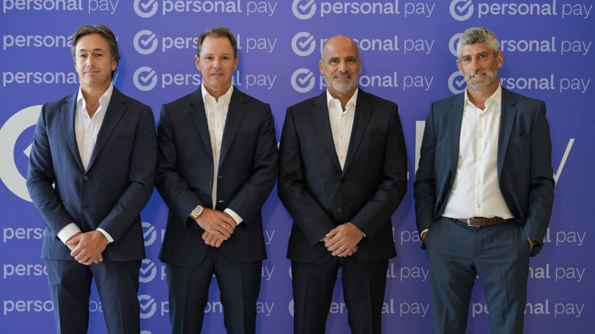

Macro y Telecom se aliaron para impulsar Personal Pay: el banco compró el 50% de la billetera por USD 75 millones
Banco Macro adquirió la mitad de Personal Pay en una operación estratégica junto a Telecom Argentina, con el objetivo de fortalecer la billetera digital y ampliar su oferta de servicios financieros en el país.

Banco Macro y Telecom Argentina sellaron un acuerdo clave en el sector financiero y tecnológico mediante el cual la entidad bancaria compró el 50% de la billetera digital Personal Pay por un monto de USD 75 millones. La operación marca un paso relevante en la convergencia entre la banca tradicional y el ecosistema fintech, en un contexto de fuerte crecimiento de los medios de pago digitales en Argentina.
Con esta alianza, ambas compañías pasan a compartir en partes iguales la propiedad de Personal Pay, una plataforma que en los últimos años logró consolidarse como una de las principales billeteras del mercado. El objetivo central del acuerdo es potenciar el desarrollo de la aplicación, incorporando nuevos productos financieros y ampliando su alcance entre los usuarios.
Desde el punto de vista estratégico, la participación de Banco Macro le permitirá a Personal Pay sumar respaldo financiero y experiencia bancaria, facilitando la incorporación de servicios como créditos, instrumentos de ahorro y otras soluciones vinculadas al sistema financiero formal.
A su vez, Macro refuerza su posicionamiento digital y su llegada a un público más joven y habituado al uso de billeteras electrónicas.
La operación también refleja una tendencia creciente en el mercado local, donde bancos y empresas de telecomunicaciones buscan asociarse para competir con mayor solidez frente a las grandes plataformas de pagos digitales. Con esta movida, Personal Pay apunta a consolidarse como un actor relevante en el sistema financiero digital argentino y a profundizar su expansión en los próximos años.